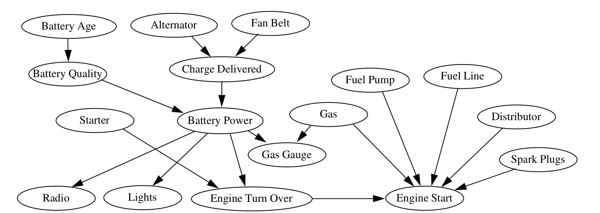
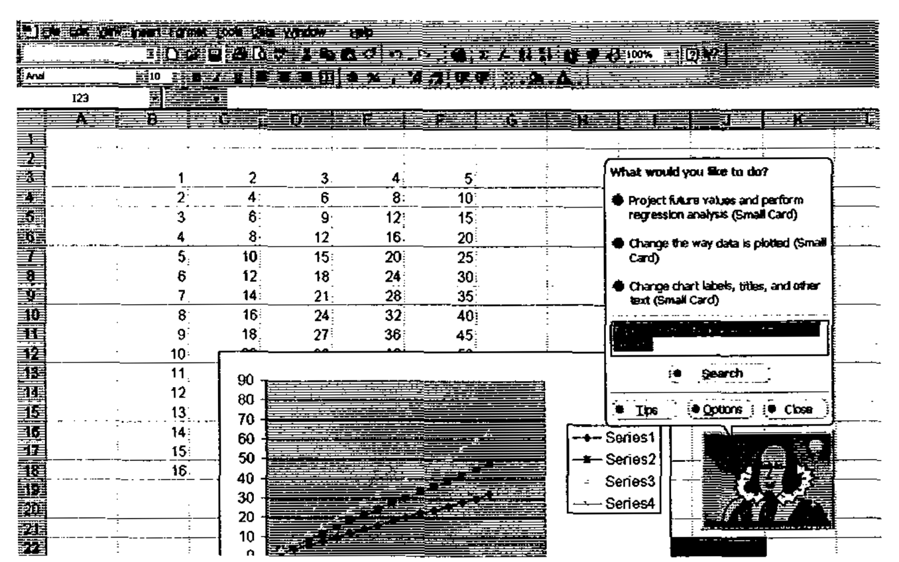
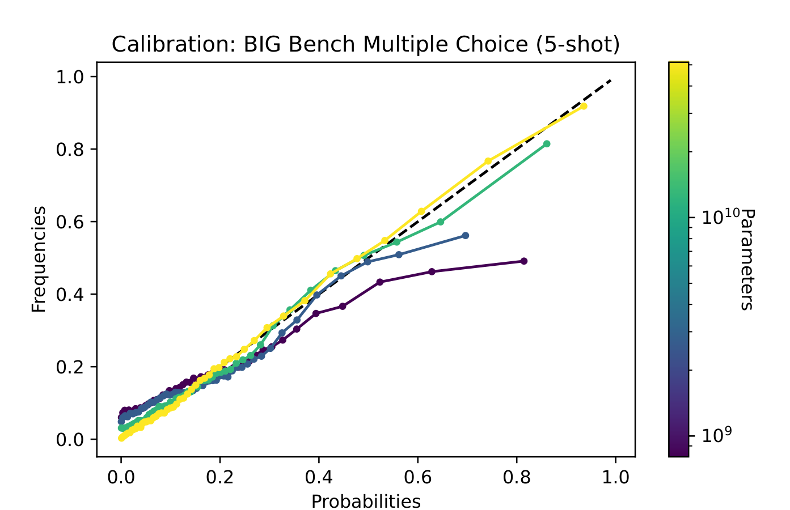

Con las dos llamadas, el robo pasa de 0.1 % a 28.4 %.
El petrolero
La prueba vale 12.5 y cuesta 10: conviene probar.
El tutor
Con la regla de dominio, el 96 % domina; con 5 ejercicios fijos, el 52 %.
En los tres casos, el sistema dice cuánto cree, y decide con eso. Y una persona puede revisar por qué.
Cifras de ejemplos/, con los mismos datos y parámetros de los laboratorios 7A y 7B.
Caso real · redes bayesianas y valor de la información
Un solucionador que elige la siguiente prueba
Heckerman, Breese y Rommelse (1995): ordenar las pruebas y reparaciones según la probabilidad de falla y el costo.
Una observación extra se hace solo si baja el costo esperado de la reparación: es el valor de la información.
En 1000 casos simulados de un auto que no arranca: $154 por caso, frente a $298 con una secuencia fija.
Un solucionador de impresión salió en el kit de soporte de Windows 95 (Breese y Heckerman, 1996).

Heckerman, Breese y Rommelse (1995), fig. 2: la red bayesiana de «mi auto no arranca». Cita con fines educativos.
Caso real · un producto masivo
Lumière: inferir qué necesita el usuario
Microsoft Research (Horvitz et al., 1998). Una red bayesiana infiere la meta del usuario según sus acciones y su pregunta.
El análisis bayesiano de las preguntas llegó a Office 95 y, después, al asistente de Office 97.
Pero los consejos que el asistente daba sin que se los pidieran salían de reglas simples, no de la red.

Horvitz et al. (1998), fig. 11: el asistente de Office 97, basado en la investigación de Lumière. Cita con fines educativos.
Caso real · salud
Pathfinder: tan bueno como el experto, y la persona decide
El problema
Diagnóstico de enfermedades de los ganglios linfáticos: más de 60 enfermedades y más de 100 rasgos.
El resultado
Coincidió con el diagnóstico de referencia en 50 de 53 casos: al menos tan bien como el experto.
Lo que no hace
Recomienda qué rasgo observar después, con el valor de la información. No recomienda el diagnóstico.
Heckerman y Nathwani (1992), Computers and Biomedical Research 25; Heckerman, Horvitz y Nathwani (1992), Methods of Information in Medicine 31. Muestra pequeña y un solo experto.
De la correlación a la causalidad · panorama
Más mantenimiento, más fallas
Mantenimiento frecuente
Poco mantenimiento
Todas las bombas
25 % fallan
17 % fallan
Bombas nuevas
5 %
10 %
Bombas viejas
30 %
45 %
La edad causa las dos cosas: es una variable de confusión. Mirar los datos juntos engaña.
Cifras ilustrativas de MantenIA (ejemplos/confusion_7.py). El dibujo es una red bayesiana leída como causas.
De la correlación a la causalidad
Ver no es intervenir
Lo que responden los datos
¿Qué bombas fallan más, entre las que veo?
Lo que quiere saber el gerente
¿Qué pasa con las fallas si aumento el mantenimiento?
Un modelo que aprende de datos observados responde la primera pregunta. Para la segunda necesita saber qué causa qué.
El club de lectura discute esta frontera con Pearl (2019).
Los LLMs y la incertidumbre · retoma la Sesión 5
Un LLM da probabilidades sobre tokens, no sobre el mundo
En la Sesión 5 vimos la softmax: una probabilidad para cada token siguiente.
Kadavath et al. (2022): los modelos grandes están bien calibrados en preguntas de opción múltiple, con el formato adecuado.
Pero su estimación de «sé la respuesta» se descalibra en tareas nuevas. Y el ajuste con preferencias humanas también la descalibra.

Kadavath et al. (2022), fig. 4, izquierda: la calibración en preguntas de opción múltiple. La diagonal es la calibración perfecta. arXiv; cita con fines educativos.
Lectura complementaria · Kıcıman et al. (2024)
¿Razonan los LLMs sobre causas?
Sorprenden
GPT-4 acertó el 97 % de las direcciones causales de un banco de pruebas. Los mejores métodos con datos llegaban al 83 %.
Pero memorizan
GPT-4 recordaba buena parte de ese banco de pruebas: estaba en sus datos de entrenamiento.
Y fallan sin aviso
Se equivocan de formas inesperadas, y el resultado cambia mucho con el prompt.
Kıcıman, Ness, Sharma y Tan (2024), Transactions on Machine Learning Research, tabla 2 y discusión.
El lugar de cada técnica
El LLM propone; la red calcula; una persona revisa
Para tu proyecto · amplía la guía de las sesiones 5 y 6
Guía de decisión: ¿cómo maneja la incertidumbre tu sistema?
Red bayesiana
Diagrama de influencia
MDP o reinforcement learning
Modelo aprendido
LLM
Datos
pocos, con conocimiento experto
pocos, con costos y beneficios conocidos
simulador o historial de interacción
muchos, etiquetados
texto
Cuantifica la incertidumbre
sí, exacta
sí, y la usa para decidir
sí, sobre resultados futuros
a veces, si está calibrado
poco confiable
Explicabilidad
alta: el dibujo y las tablas
alta: la cuenta de cada opción
baja: una política
de alta a baja
baja, aunque explique
Tipo de decisión
diagnosticar, combinar evidencia
un solo paso; comprar información
en secuencia
predecir o clasificar
lenguaje, con verificación
En MantenIA
diagnosticar la bomba
reemplazar o medir antes
cuándo mantener cada bomba
predecir fallas con datos de sensores
redactar la orden de trabajo
Cierre de la sesión
El mapa de la Unidad 7
Proyecto del curso · paso de la unidad
El cierre técnico: tu componente híbrido y tu demostración
¿Dónde aparece la incertidumbre en tu proyecto, y cómo la manejas o la comunicas?
¿Cuál es tu componente híbrido? Qué propone el LLM, y qué técnica, prueba o persona lo verifica.
¿Qué vas a mostrar en la demostración de la sesión 8, en 3 minutos?
En casa · unos 60 min
Agrega estas respuestas al plan.md del equipo y revísalo con la lista de chequeo (J.6).
Entrega: la fecha se anuncia en clase.
Trabajo independiente
Dos trabajos, sin programar
TI-1 · ¿Cuánto pagarías por saber antes de decidir?
Modela una decisión incierta de tu organización, calcula su utilidad esperada y el valor de una información. Unos 70 min.
TI-2 · Diseña el tutor de un curso de tu organización
Define las habilidades, los parámetros y la regla del siguiente ejercicio. Pruébalo en el notebook del 7B. Unos 65 min.
Sin datos personales ni confidenciales. Se entregan en la fase de cierre; la fecha exacta se anuncia en clase. Detalles en trabajo_independiente.md.
Heckerman, D., Breese, J. S. y Rommelse, K. (1995). Decision-theoretic troubleshooting. Communications of the ACM 38(3), 49–57. DOI (Wayback) · PDF
Breese, J. S. y Heckerman, D. (1996). Decision-theoretic troubleshooting: a framework for repair and experiment. UAI 1996. arXiv
Horvitz, E., Breese, J., Heckerman, D., Hovel, D. y Rommelse, K. (1998). The Lumière project: Bayesian user modeling for inferring the goals and needs of software users. UAI 1998, 256–265. arXiv · página de Horvitz
Heckerman, D. y Nathwani, B. (1992). An evaluation of the diagnostic accuracy of Pathfinder. Computers and Biomedical Research 25(1), 56–74. PDF · Heckerman, D., Horvitz, E. y Nathwani, B. (1992). Toward normative expert systems. Methods of Information in Medicine 31. PDF
Pearl, J., Glymour, M. y Jewell, N. P. (2016). Causal Inference in Statistics: A Primer. Wiley · Pearl, J. y Mackenzie, D. (2020). El libro del porqué. Pasado y Presente
Kadavath, S. et al. (2022). Language models (mostly) know what they know. arXiv
Kıcıman, E., Ness, R., Sharma, A. y Tan, C. (2024). Causal reasoning and large language models: opening a new frontier for causality. TMLR. mlanthology · arXiv
Poole, D. L. y Mackworth, A. K. (2023). Artificial Intelligence: Foundations of Computational Agents, 3.ª ed., cap. 9, 11 y 12. artint.info
Shojaee, P. et al. (2025). The illusion of thinking. NeurIPS 2025. arXiv · Lawsen, A. (2025). Comment on The Illusion of Thinking. arXiv